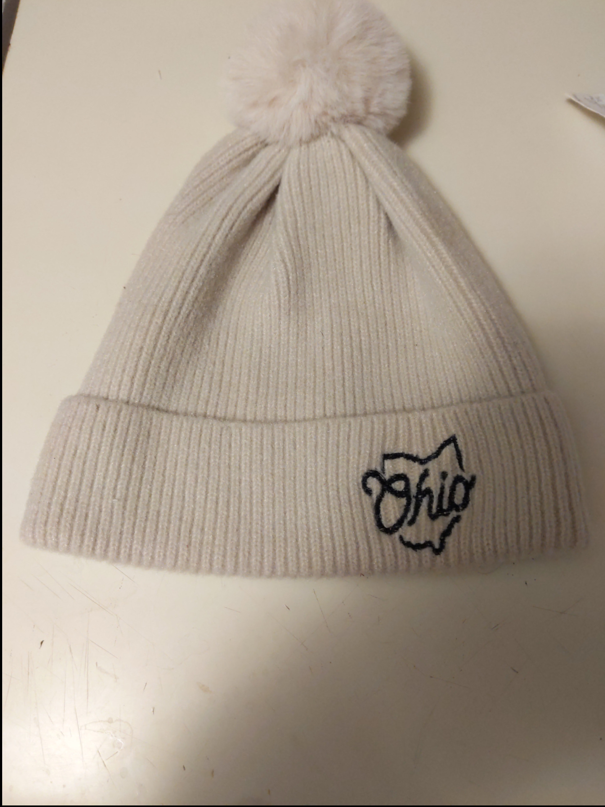
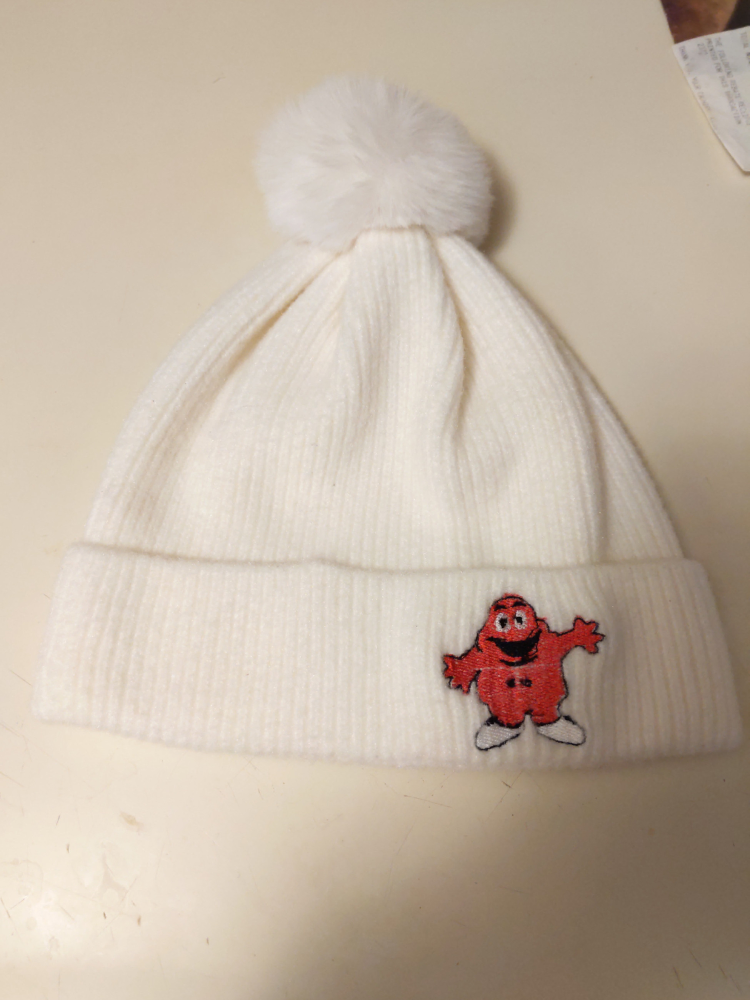
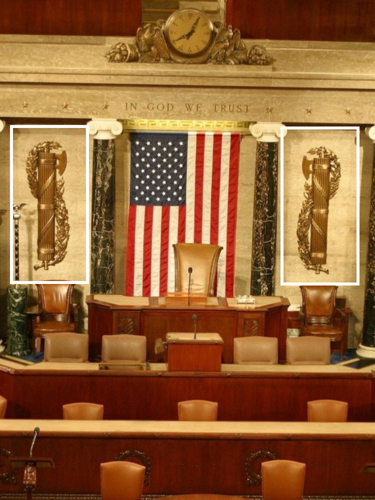
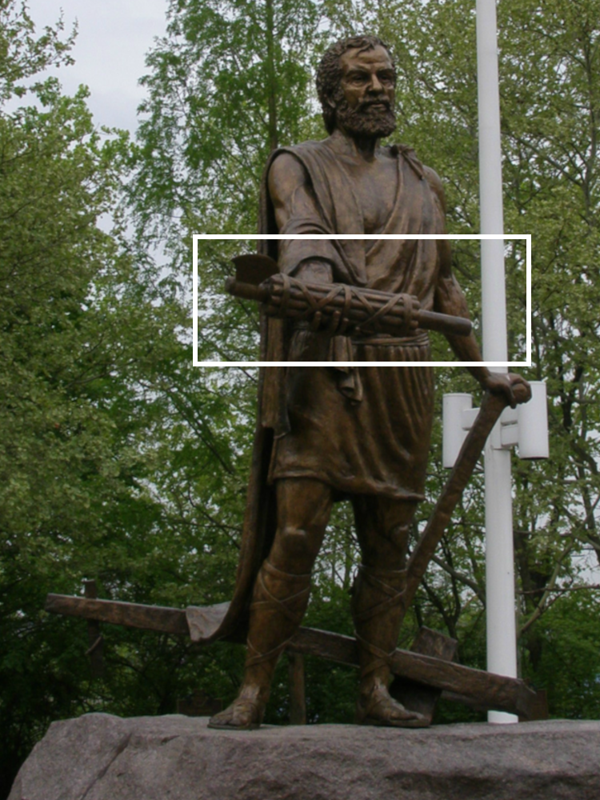
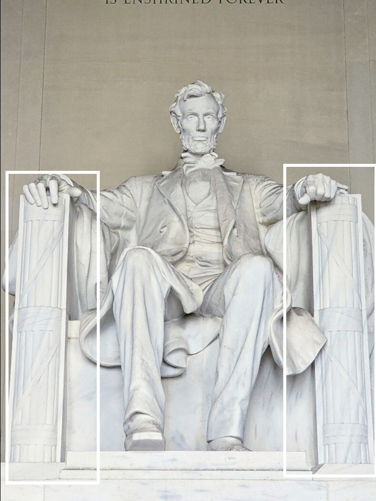
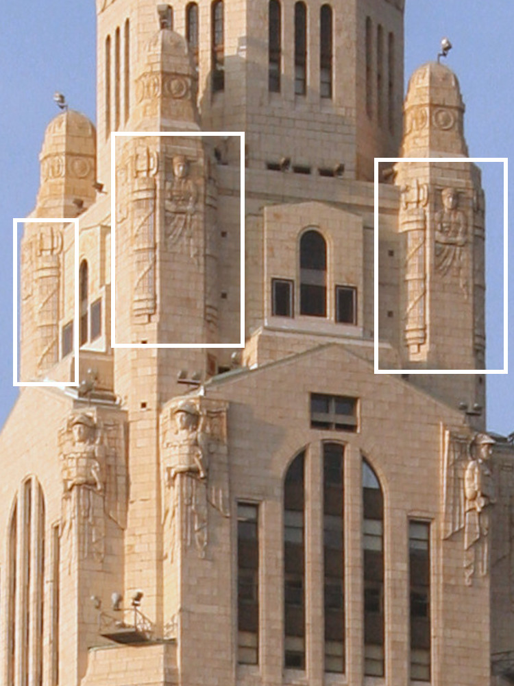
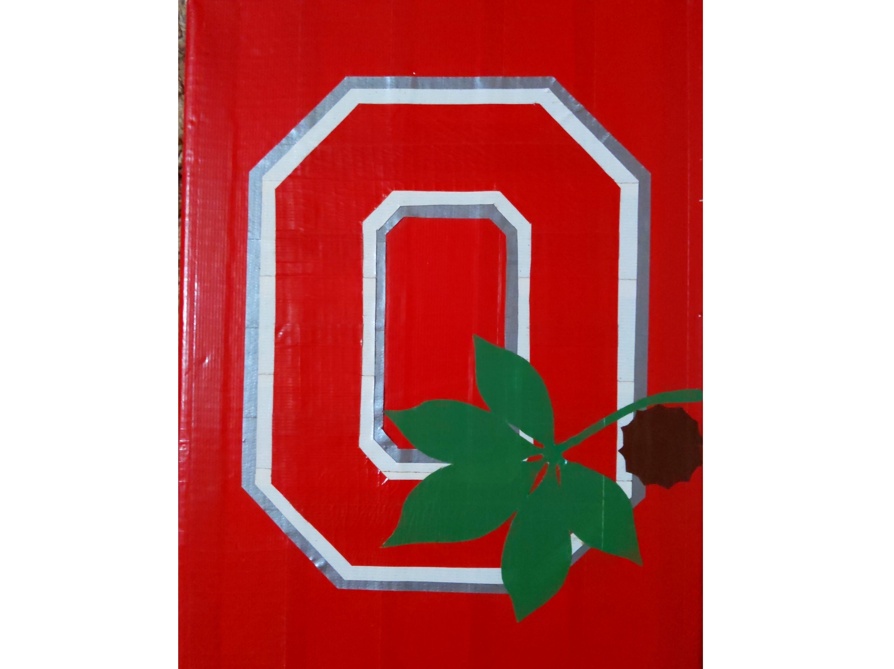
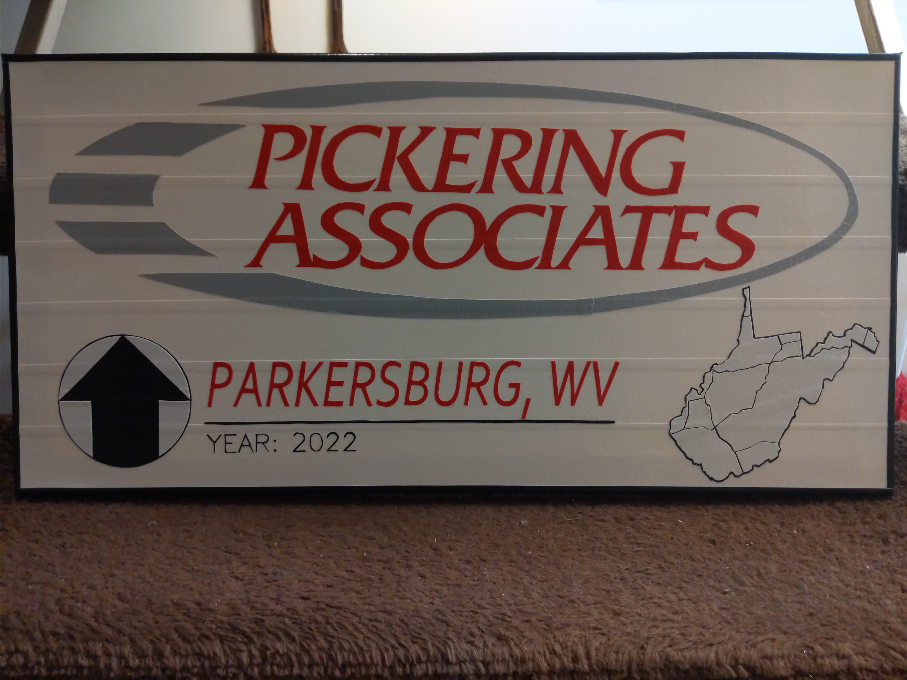

My Creative Projects
Sewing and Embroidering an American Flag

I sewed and embroidered an American flag from scratch as a Christmas gift. I used a high quality cotton duck canvas and used a slightly darker red and blue than is traditionally used, which I think looks nice as a display flag. It took me attempting a couple tiny flags and one full size nylon flag to get comfortable with my ability to sew neatly and in straight lines, though this flag is still not perfect. For the 13 stars on the canton (the blue rectangle), I used an embroidery machine. The embroidery field on my machine is somewhat small, so I had to do each star individually, readjusting the position and rotation for each star. I then attached the finished canton to the rest of the flags and added a header with grommets and year embroidered. This took about 15 hours, so in the future I would like to see how I can reduce cycle time while increasing quality. I also think it would be cool to start producing flagpoles using recycled steel oilfield pipe. Using ANSI FP1001 "Guide Specifications for Design of Metal Flagpoles", I was able to create an excel workbook that can determine whether a flagpole is satisfactory, depending on factors such as height, diameter, material, wall thickness, and flag size.


I also used the embroiderery to make hats as Christmas gifts. The second hat is the mascot of Western Kentucky University, "Big Red".
Building a Fasces

As a Christmas gift, I made a fasces. The fasces is an American symbol derived from ancient Rome. It consists of a bundle of rods/sticks, usually surrounding an axe/hatchet. It symbolizes collective strength, as a single rod is easy to break, but when bound together, the group is much stronger. The axe further symbolizes that this collective is not to be messed with. The fasces can be seen everywhere in American iconography, from official seals, monuments, and to architecture. My fasces was built using sticks from behind my parents house that I applied wood stain to, nailed to a base and held together with what I believe is a piece from a chain link fence. The hatchet was store bought, but in future versions, I will probably try to forge my own axe using sand casting.




Examples of the fasces in American architecture. The fasces is proudly shown in the US House of Representatives, directly behind the Speaker of the House. In Cincinnati is the statue depicting the Ancient Roman leader, Lucius Quinctius Cincinnatus (for whom the city is named) with his plow in one hand, and the other outstretched, presenting a fasces. At the Lincoln Memorial, versions of the fasces without the axe head are included on the statue of Lincoln, and in Columbus, fasces can be seen from all sides carved into the stone at the top of LeVeque Tower, an art deco style skyscraper built in 1927.
Creating Artwork with Duct Tape

Since middle school, I have been making artwork out of duct tape. For my first couple years at Ohio State, the brand new "Tom W Davis" Clocktower was a big meme among students. Many thought it was a waste of money, others disliked the large, bright LCD screen, and some just thought it was ugly and uninspired. I had a large undecorated wall, so I decided to honor this clocktower by turning it into artwork, in the classic "O-H-I-O" photo pose. I'm not sure why I didn't include the clock at the top of my rendition. Along with this piece, I have made many other duct tape art pieces, mostly as Christmas gifts. The process involves creating a design in Photoshop, printing it out at 1:1 scale, then clear taping the paper over the respective color tape and cutting it out. These are then pieced together like a puzzle, and can get very intricate.


These are a couple examples of other duct tape paintings I have done. First, a simple Block-O, then a gift for the White Elephant gift exchange at my former job, Pickering Associates. I've completed many other duct tape paintings, but many were in high school, and I only have low quality pictures of them due to my broken phone camera.